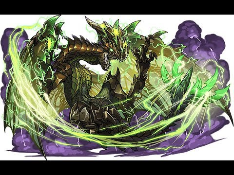

首頁
迅龍
雷狼龍
電龍
電龍

萊傑克斯
飛龍種(龍盤目 龍腳亞目 電翼龍下目 電龍上科 傑克斯科)
稱號 電的反逆者
別名 電龍
生態
在アルコリス地區的森丘上 生存的大型飛龍
金色與黑色的銳利甲殼給人攻擊的印象 向剪刀般的叉狀尾
持有著巨大的翅膀 翼膜上浮現著類似蝴蝶翅膀的紋路
美麗到讓人不自覺著迷的程度
操控著各式各樣膨大的電擊 獵人公會以「電龍」稱呼
要特別注意的是 與其美麗的姿態對照的是 有著相當罕見的兇暴性 與相當的慘忍
電龍對於從卵中孵化的幼體並不會親自養育 幾乎就完全放置了
幼體就真的以出生後的狀態獨自開始生活
以必死決心自己的身體自己守護 用自己的力量來確保自己獵物
其成長過程所建築出的 就是前述所說的兇暴性
對於侵入自己地盤的任何生物都會成攻擊對象 進入視線的話就算是大型飛龍也會攻擊
就算敵人失去了戰意 也不會停下攻擊 就算已經逃跑了也會堅持追擊
有時就算是同族也會成為攻擊對象 空腹的話也會同類相食
不幸踏入領土的藍跳王*1也被無情地毆打殺死並啃食的姿態
被確認到對在附近飛行的火龍進行奇襲的姿態
電龍的存在不只對獵人 對其他的魔物也是一大威脅
一旦狂暴的話 就會造成破壞周邊地區生態平衡的損害
因其極度危險的性質 使其有著「電的反逆者」「天空惡漢」的稱號
順帶一提 造成損害的個體 是雄性的場合比較多 雌性的個體很少被確認
在飛龍種之中 持有著發達且巨大的翅膀
其空戰能力能與火龍(利奧雷烏斯) 千刃龍(賽璐雷基歐斯)匹敵
此外 貌似因翅膀的強韌 除了用來飛行還能作為武器使用
如毆打般襲擊獵物 如切斷般揮動把外敵給吹飛
被確認到在飛龍中有著非常稀有的攻擊姿態
銳利的利爪 有著一根往前生長後 背面還有一根同時生長的獨特進化
不管是揮動還是打擊都能咬住獵物對獵物造成傷害 非常富有攻擊性的形狀
此外 翅膀有著帶電的性質 有時也可以利用揮動來產生電磁波
貌似產生的電磁波也會對周圍的生物產生影響
因為這樣 巨蜂等等的貧弱甲蟲種會觸電而死 然後被捕食
全身覆蓋的甲殼(棘殼) 有著能讓光是碰觸到的獵物就受傷的銳利
光是特別發達的翼爪所造成的攻擊 就能對獵人造成威脅
尾巴的棘進化成如剪刀的形狀 可以抓住並捕獲外敵或是獵物
另外 全身各部位所具備的發電器官 能發揮出足以與雷擊匹敵的電力
電龍與其他魔物有著明顯差異 是螢光色的電氣
有著獨特軌道的雷光吐息與在大地上行走的電流 能放出有著獨特性質的電擊
但是 電龍真正恐怖的地方 是被稱呼為「電荷状態」的特殊能力
電龍的頭部 翼部 尾部三部位會進行震動來集中電力
各自的部位都帶著膨大的電力 轉變成「部位電荷状態」
進入電荷狀態的部位 與普通的時候比起來 外表有著很大的變化
利用其部位攻擊的話 會增加大規模的放電現象 威力也變得更大
頭部像雞冠一樣前後肥大化 出現了綠色的線條 眼睛也從紅色變成很明顯的綠色
吐息的輸出也上升 能做出更廣範圍的電擊
從雞冠所放出的電氣能量 如巨大的劍一樣 來回的揮動攻擊
翅膀跟翼爪和翼膜全部會發出美麗的翡翠色光 當揮動的時候會產生強烈的電擊
然後尾巴也大幅肥大化 原本分成兩叉的前端又更加分開變成四叉並鮮豔的發光
這個帶電的尾巴能直接把獵物抓起 並用前段插入地面
就這樣直接對對象流通高壓電流 使其感電 且封住行動的招數也能看到
最後當三部位全都變成電荷狀態的場合 電龍全身纏繞的電流 會變得更加激烈
放出全身的大規模電擊 蠻橫無理的狂暴著
但是 進入電荷狀態的部位 對於外部衝擊也變得脆弱 如一把雙刃劍
當受到過度攻擊的話 便會解除電荷狀態
此外 確認到疲勞時會無法維持電荷狀態 會變回普通的狀態
青電主
萊傑克斯
飛龍種(龍盤目 龍腳亞目 電翼龍下目 電龍上科 傑克斯科)
別名 青電主電龍
生態
全身各部分的發電器官過度發達 而獲得強大力量的電龍(萊傑克斯)的特殊個體
平常時就已經跟通常種的充電狀態一樣蓄積著同等規模的膨大電力 各部位都發出翠綠色的光輝
體格比起通常個體有著接近兩倍大的大型化 頭冠也肥大化且也有更加發達的刺棘
整體都變成給人有種會更加激烈攻擊的印象與樣貌
不只是巨大的電氣能量寄宿在身體裡
發現外敵的時候會操控更強大的發電行動 蓄積超過限制的電力
不久之後就會放出可以照亮周圍的青白色電光 變成「青電荷状態」
其光輝與蒼穹讓人覺得非常美麗 見到其樣子的人賦予了≪青電主≫的二名
變成青電荷狀態的青電主電龍 各部位都會儲蓄著比起落雷更加強大且規格外的電氣能量
用其部位所使出的攻擊 不管是哪種都有著恐怖的破壞力
特別是頭冠的巨大電氣能量 將其如大劍一般揮下的「閃電之刃」
被捲入的生物號稱會只有留下影子的消失 這樣有著巨大威力的必殺技
此外 運動能力也比通常個體還強 攻擊也因此變得更加激烈
原本因為飛行能力而在空中戰相當強大的電龍 青電主更是在這之中更加強大
還有在在空中側轉並翻身的時候還能進行吐息來攻擊 這種令人驚訝的報告
此外 不知為何是不是習慣了自身會放出激烈閃電的原因
突然受到強烈閃光的沐浴也不會簡單的失衡而墜落 會持續的飛行
此外 為了驅使發達的電殼與膨大的電力而會使用強力的電磁力技能
翼爪在滿足某種程度的場合下會發生「超電磁球」 把周圍的存在受到磁力影響而吸來
在接觸的瞬間便會受到無情的電擊
獵人的裝備也是其對象 只要在周圍的話就會被強行拖過去
然後瞄準著在無法自由移動的時候
青電主會進行追擊的襲擊報告也有
這樣恐怖的攻擊性與兇暴性
這樣過於強大的電力 對於青電主電龍自身似乎也是一種負擔
特別是維持著青電荷狀態的部位 防守變得非常的弱
貌似對於外敵與獵人的反擊會因為承受不住而破損的樣子
(但是 因為這樣似乎也不會特地抑制電力的樣子)
而且 因為過度狂暴而接近極限疲勞 各部位的發電會一瞬間不安定
確認到會變回平常時期的電龍的樣子
比起通常種還要更加超過的壓倒性戰鬥力 獵人公會對於這個個體有特別的措施
要是沒有得到特殊許可的話 公會是不會允許狩獵的
一方面 因為自身的電力而鍛鍊出的素材 比起通常的電龍還要有更高的價值
其素材所做出的武器防具會寄宿著青電主的靈魂 其攻擊性有著比外表上更加的強大的特殊性質